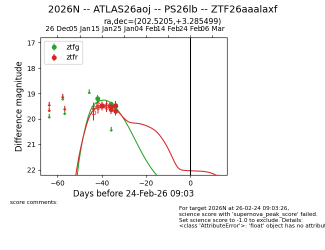
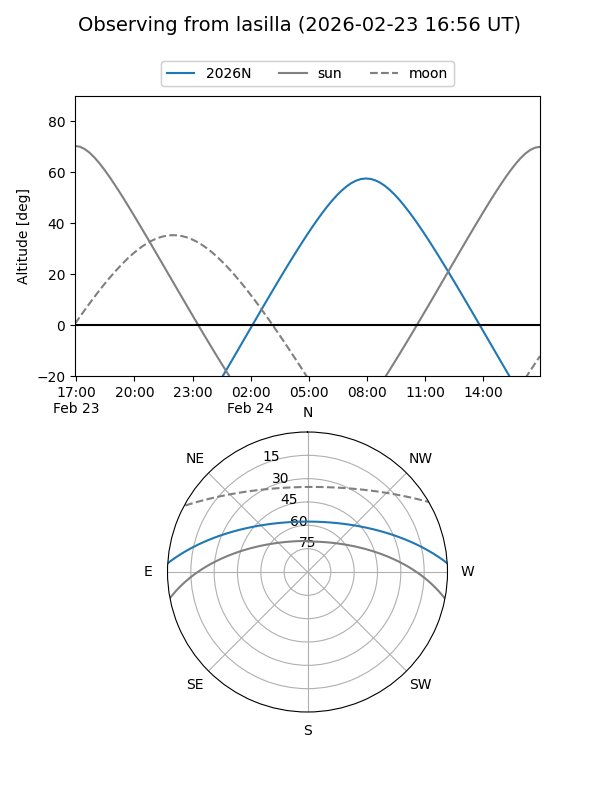
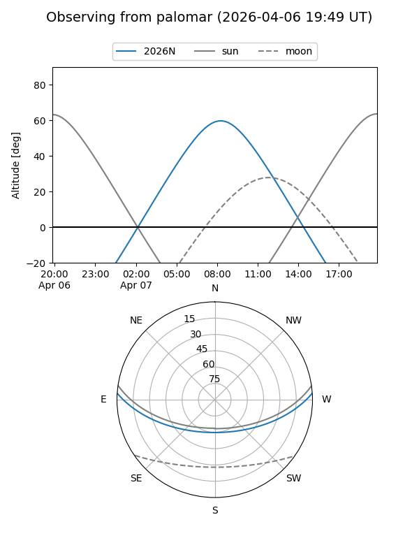
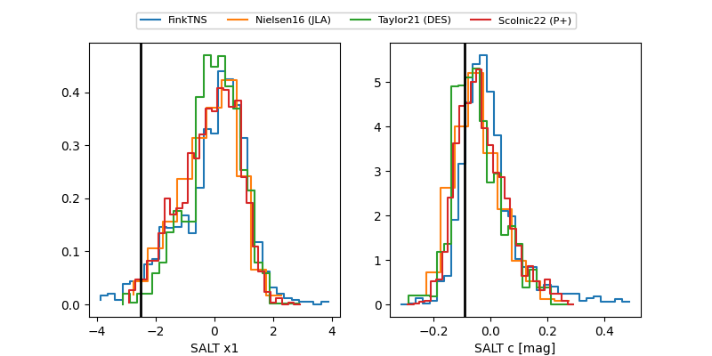

2026N
Target 2026N at 2026-01-25 09:56
Aliases and brokers:
FINK: link
Lasair: link
ALeRCE: link
TNS: link
YSE: link
alt names
ZTF26aaalaxf (ztf,fink_ztf)
2026N (tns,yse)
ATLAS26aoj (atlas)
PS26lb (panstarrs)
Coordinates:
equatorial (ra, dec) = 202.5205,+3.28550
equatorial (HMS+DMS) = 13:30:04.92,+03:17:07.80
galactic (l, b) = (325.7729,+64.42980)
Flags:
Photometry:
last ztfg=19.49, ztfr=19.68
3 ztfg, 6 ztfr detections
Lightcurve

Visibility


Additional plots
